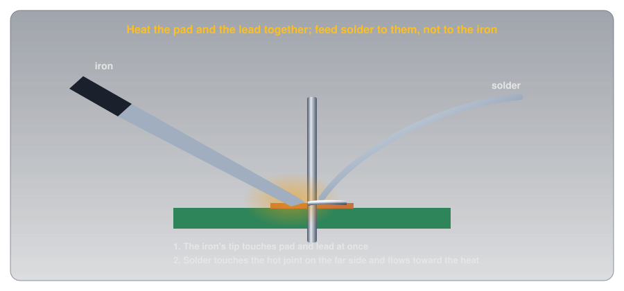
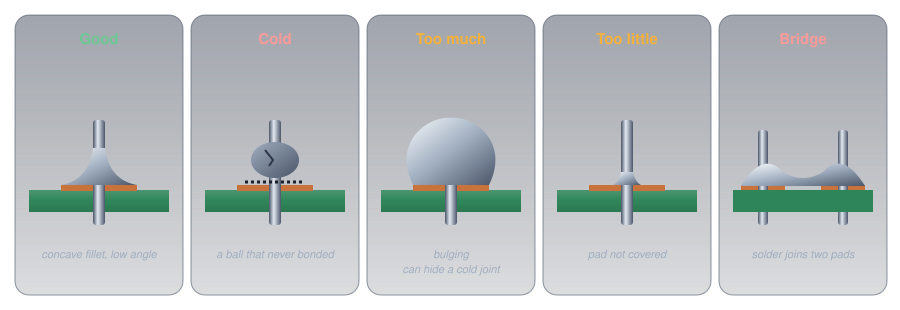
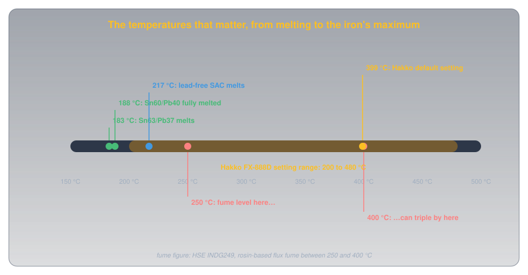
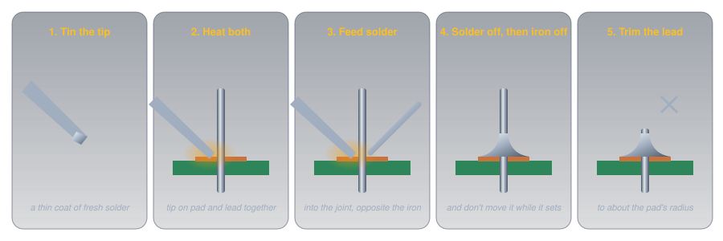

Soldering🔗
Practical Tools · Beginner
This article is part of the Practical Tools section. Circuits on this site start on a breadboard; soldering is how one becomes permanent. Read the safety section before heating an iron.
Two solder joints can look much the same from a metre away. Both are lumps of silver metal around a component lead, and both pass a continuity test the day they're made. A month later one of them is still perfect, and the other makes a circuit work only when the board is tapped, or not at all. The second was never really joined: the solder sat on the metal without bonding to it.
Two ideas explain the difference:
- Solder only bonds to metal that is clean and hot enough to melt it. Solder isn't a glue that sticks to the surface. Molten solder wets clean copper and tin, flowing across them and alloying with them, but only if the metal itself is above the solder's melting point and free of oxide. That's why the iron heats the parts, not the solder, and why solder carries flux to clean the metal.
- Heat is a balance between too little and too much. The parts have to get hot enough quickly enough to bond; held too hot or too long, they lift copper off the board, damage parts, burn off the flux, and make more fume.
The joint that failed never got hot enough to bond. The second half shows how to tell.
Idea One: Solder Wets Clean, Hot Metal🔗
When molten solder meets clean copper above the solder's melting point, it doesn't just sit there: it spreads, flowing across the surface and forming a thin layer of alloy with it. That spreading is wetting, and it's what makes a joint both an electrical connection and a mechanical one.
Two things stop it:
- The metal isn't hot enough. Solder that melts on the iron and drips onto a cooler pad freezes the moment it touches it, before it can wet. Wikipedia's article on soldering describes the right way round: the "iron heats the parts to be connected, which in turn melt the solder, guaranteeing adequate heat."
- The metal isn't clean. Copper exposed to air grows a thin layer of oxide, and solder won't wet oxide. Flux is a chemical cleaner that strips it as the joint heats; electronics solder wire carries flux in a core down its middle, so it arrives exactly where it's needed. Wikipedia's solder article describes flux as a "reducing agent" that reduces metal oxides "to improve the electrical connection and mechanical strength."

Definition: Wetting
Molten solder spreading across a metal surface and bonding to it, instead of beading up on it. A well-wetted joint meets the metal at a low angle, like water on clean glass; a poorly wetted one sits in a ball, like water on a waxed car.
Reading a Joint🔗
Wetting leaves visible evidence, and so does its absence:

- Good: a smooth, concave fillet, like a small volcano with curved sides, meeting both the pad and the lead at a low angle.
- Cold: the parts never got above the solder's melting point. Wikipedia describes cold joints as "dull and sometimes cracked or pock-marked." The solder is there, but it never bonded underneath.
- Too much: a bulging ball. It may be bonded, but its shape can hide a cold joint inside.
- Too little: the pad isn't covered, so the joint is weak.
- Bridge: solder runs from one pad to the next: a short circuit you made yourself.
The Puzzle, Solved🔗
The joint in the hook was cold: the solder melted on the iron and landed on a pad that wasn't hot enough, so it froze in a ball touching the copper without wetting it. A ball pressed against a pad conducts well enough to pass a test, until temperature changes and vibration open the hairline gap under it. That's why the shape matters more than whether a meter beeps.
One caution when judging: lead-free solder looks different. Wikipedia notes that lead-free solders "cool to a dull surface even if the joint is good." On lead-free joints, judge the shape, not the shine.
Idea Two: Enough Heat, Not Too Much🔗
The iron's job is to get both parts above the solder's melting point quickly, so the solder wets before the flux is used up. Too cool and the joint never makes it; too hot or held too long and the flux burns away, the copper pad can lift off the board, and heat-sensitive parts like LEDs and semiconductors can be damaged.
Choosing Solder🔗
The solder decides the minimum temperature:
| Solder | Melts at | Notes |
|---|---|---|
| Sn63/Pb37 (63% tin, 37% lead) | 183 °C | eutectic: solid to liquid at one temperature, the lowest of the tin-lead alloys |
| Sn60/Pb40 | 188 °C | passes through a pasty range while cooling |
| SAC (tin-silver-copper), lead-free | 217 °C | joints cool dull; needs a hotter iron |
(Melting points from Solder on Wikipedia.)
A eutectic alloy like Sn63/Pb37 goes from liquid to solid at a single temperature, so it sets cleanly. Alloys with a pasty range spend a moment half-solid, and a joint moved during that moment can set grainy and weak. Lead-free solder has been required in most consumer electronics sold in the European Union since 2006, which is why it's what you'll find on most commercial boards; tin-lead is still widely used by hobbyists because it's more forgiving.
Choosing a Temperature🔗

A temperature-controlled iron holds its tip at a set temperature as joints draw heat from it. A common hobby station, Hakko's FX-888D, sets from 200 °C to 480 °C, holds its setting to ±1 °C at idle, and ships set to 399 °C (Hakko FX-888D manual). The tip has to run well above the solder's melting point because a pad and lead pull heat away the moment it touches them.
Higher isn't better, though. The UK Health and Safety Executive's guide to solder flux fume notes that "fume levels can triple between 250–400°C." A practical rule: use the lowest setting that melts solder on a joint promptly, and raise it only for big pads, thick wires, or lead-free solder. A larger tip delivers more heat at the same temperature, which is often a better fix than turning the dial up.
Making a Through-Hole Joint🔗
Most parts on this site are through-hole (Package Types shows the difference): their leads pass through holes in the board, to be soldered on the other side. The sequence is the same every time:

- Tin the tip. Wipe it on a damp sponge or brass wool and melt a little fresh solder onto it. A wet, shiny tip passes heat into the joint; a dry, oxidized one barely does.
- Heat both parts at once. Touch the tip to the pad and the lead together, where they meet.
- Feed solder into the joint, on the side away from the iron. It should melt on contact with the parts and flow around the lead. If it only melts when it touches the tip, the parts aren't hot enough yet.
- Remove the solder, then the iron, and keep everything still while the joint sets.
- Trim the lead. Wikipedia's guide is to cut the excess "leaving a length of about the radius of the pad."
Then look at it. A concave, wetted fillet means a good joint; anything else is worth redoing now rather than finding later.
Undoing a Joint🔗
Every joint can be taken apart again. Two tools do it, and Wikipedia lists both:
- Desoldering braid (also called wick): fine copper braid soaked in flux. Lay it on the joint, press the iron on top, and the molten solder wicks into the braid.
- A solder sucker: a spring-loaded pump. Melt the joint, put the nozzle on it, and press the button to suck the solder up.
With the old solder gone, the part lifts out, and the joint can be made again with fresh solder and fresh flux.
Caring for the Tip🔗
A tip lasts far longer if it's never left bare. Hakko's manual says to "always clean the tip and coat it with fresh solder after use." For a tip that has gone black and won't take solder, the manual's procedure is to set the iron to 250 °C, clean the tip, apply fresh solder containing flux, and clean again, repeating "until all the oxide is removed," then coat it with fresh solder. A tip that's deformed or heavily eroded should be replaced.
The Kit🔗
A soldering setup for the projects on this site needs only a few things:
-
A temperature-controlled iron
Why it matters: holds the tip at a set temperature, so it neither cools on big joints nor cooks small ones.
-
Rosin-core solder wire
Why it matters: brings the flux with it. Thin wire suits the small joints on hobby boards.
-
A stand and a sponge or brass wool
Why it matters: a safe place for a hot iron, and a way to keep the tip clean.
-
Flush cutters
Why it matters: trim leads cleanly and close to the joint.
-
Desoldering braid or a solder sucker
Why it matters: every mistake becomes fixable.
-
Fume extraction and safety glasses
Why it matters: flux fume and flying lead clippings are the two everyday hazards.
Safety🔗
Soldering's hazards are heat, fume, and lead. All three are easy to manage once you know they're there.
Burns and Fire
The tip runs at hundreds of degrees: Hakko's manual gives 200 to 480 °C for the FX-888D. Always return the iron to its stand, never reach across a hot iron, keep flammable materials away from the tip, and switch the station off when you walk away. Hold small parts with pliers or a clamp, not fingers: the parts get as hot as the joint.
Flux Fume
The smoke from soldering is mostly flux, and the UK Health and Safety Executive warns that rosin-based flux fume "is hazardous to health, being a common cause of occupational asthma," and that its residues "can also cause skin problems such as dermatitis." Don't breathe the plume: work in a ventilated room with extraction that pulls the fume away at source, and use the lowest iron temperature that works. The HSE also cautions that small bench fan-and-filter units "may not provide adequate control" and blow fume back into the room, so point their exhaust away from people.
Lead and Clippings
Tin-lead solder contains lead, which the Canadian Centre for Occupational Health and Safety's lead profile notes can enter the body by ingestion and "can cause permanent damage to the nervous system." The everyday route is hands to mouth: keep food and drink off the bench, and wash your hands after soldering. Wear safety glasses, since trimmed leads fly off at speed. And never solder a circuit while it's powered.
Practice🔗
1. Where Does the Heat Go?
Why should solder be fed to the joint rather than melted on the iron's tip and carried over?
Solution
Solder only wets metal that's above its melting point. Melted on the tip, it lands on parts that may be cooler and freezes before it bonds: a cold joint. Fed to the joint, it melts only if the parts are hot enough, which proves they are.
2. Diagnose the Joint
A joint is a dull, round ball sitting on the pad, and the circuit works only when you press on the board. What's wrong, and how do you fix it?
Solution
A cold joint: the solder never wetted the pad. Reheat the pad and lead together, add a little fresh solder (for fresh flux), and let it flow into a concave fillet. If it won't wet, remove the old solder with braid first.
3. Shiny or Not?
A lead-free joint is dull grey but has a smooth, concave fillet. Is it bad?
Solution
Probably not. Lead-free solder cools dull even when the joint is good. Judge it by shape: a concave fillet that wets both pad and lead is a good joint.
4. Why Eutectic?
Why is Sn63/Pb37 easier for a beginner than Sn60/Pb40?
Solution
Sn63/Pb37 is eutectic: it goes from liquid to solid at one temperature, 183 °C. Sn60/Pb40 passes through a pasty range as it cools, and a joint that moves during that moment can set grainy and weak.
5. Turn It Up?
Solder melts slowly on a large ground pad. Should you turn the iron to its maximum?
Solution
Not as a first move. A bigger tip carries more heat at the same temperature, which usually fixes it without the downsides. Higher temperatures burn flux faster, risk lifting the pad, and, per the HSE, can triple the fume between 250 and 400 °C. Raise the temperature only as far as you need.
6. The Fan on the Bench
A small fan-and-filter unit sits beside the iron. Is that enough protection from flux fume?
Solution
Not necessarily. The HSE says these units "may not provide adequate control" because their filters miss much of the fume and blow the rest back into the room. They're for very occasional work; extraction that captures fume at source, plus good room ventilation and a lower iron temperature, does better.
Quick Recap🔗
-
Wetting makes the joint
Molten solder bonds only to clean metal above its melting point.
-
Heat the parts
The iron heats pad and lead; they melt the solder. Feed solder to the joint, not the tip.
-
Flux cleans
It strips oxide so solder can wet. Rosin-core wire brings it along.
-
Read the shape
Concave and wetted is good. A dull ball is cold. Also watch for too much, too little, and bridges.
-
Choose the solder
Sn63/Pb37 melts at 183 °C, all at once. Lead-free SAC at 217 °C, and it cools dull.
-
Lowest temperature that works
Fume can triple from 250 to 400 °C. A bigger tip beats a hotter one.
-
Undo and maintain
Braid or a sucker removes solder. Keep the tip tinned.
-
Heat, fume, lead
Iron in its stand, extraction at source, hands washed, glasses on.
What's Next🔗
A soldered circuit is only as good as its first power-up. Bench Power Supplies shows how a current limit turns a soldering mistake, like a bridge between two pads, into a CC lamp instead of smoke.
Further Reading🔗
Safety
- HSE INDG249: Controlling Health Risks From Rosin-Based Solder Flux Fume (PDF) — the health effects, how temperature affects fume, and which extraction works
- CCOHS: Lead — how lead enters the body, its health effects, and handling
Manufacturer Documents
- Hakko FX-888D Instruction Manual (PDF) — temperature range, safety warnings, and tip maintenance
Deep Dives
- Soldering — Wikipedia — wetting, cold joints, and desoldering
- Solder — Wikipedia — alloys, melting points, flux, and lead-free rules
Related Articles
- Breadboards — where circuits are proven before they're soldered
- Package Types — through-hole and surface-mount parts
- Open Circuits, Short Circuits, and Fuses — the continuity test, and what a solder bridge does